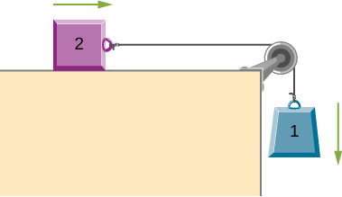
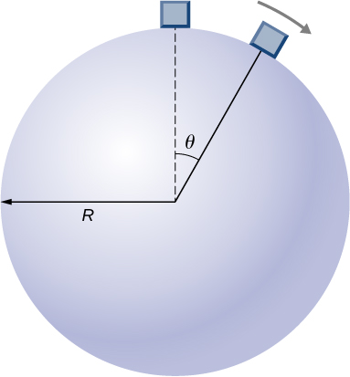
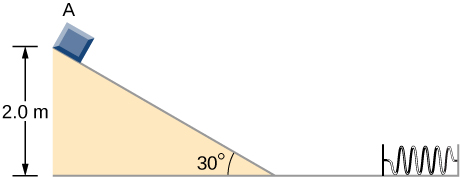
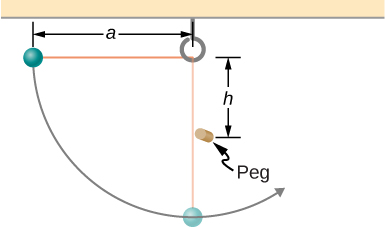
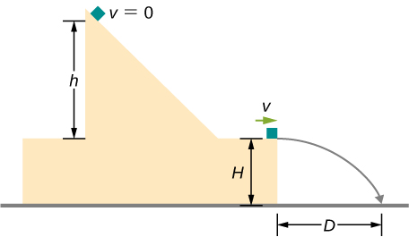
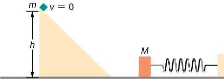

Additional Problems
A massless spring with force constant hangs from the ceiling. A 2.0-kg block is attached to the free end of the spring and released. If the block falls 17 cm before starting back upwards, how much work is done by friction during its descent?
A particle of mass 2.0 kg moves under the influence of the force Suppose a frictional force also acts on the particle. If the particle’s speed when it starts at is 0.0 m/s and when it arrives at is 9.0 m/s, how much work is done on it by the frictional force between and
Block 2 shown below slides along a frictionless table as block 1 falls. Both blocks are attached by a frictionless pulley. Find the speed of the blocks after they have each moved 2.0 m. Assume that they start at rest and that the pulley has negligible mass. Use and
A body of mass m and negligible size starts from rest and slides down the surface of a frictionless solid sphere of radius R. (See below.) Prove that the body leaves the sphere when
A mysterious force acts on all particles along a particular line and always points towards a particular point P on the line. The magnitude of the force on a particle increases as the cube of the distance from that point; that is , if the distance from P to the position of the particle is r. Let b be the proportionality constant, and write the magnitude of the force as . Find the potential energy of a particle subjected to this force when the particle is at a distance D from P, assuming the potential energy to be zero when the particle is at P.
An object of mass 10 kg is released at point A, slides to the bottom of the incline, then collides with a horizontal massless spring, compressing it a maximum distance of 0.75 m. (See below.) The spring constant is 500 N/m, the height of the incline is 2.0 m, and the horizontal surface is frictionless. (a) What is the speed of the object at the bottom of the incline? (b) What is the work of friction on the object while it is on the incline? (c) The spring recoils and sends the object back toward the incline. What is the speed of the object when it reaches the base of the incline? (d) What vertical distance does it move back up the incline?
Shown below is a small ball of mass m attached to a string of length a. A small peg is located a distance h below the point where the string is supported. If the ball is released when the string is horizontal, show that h must be greater than 3a/5 if the ball is to swing completely around the peg.
A block leaves a frictionless inclined surface horizontally after dropping off by a height h. Find the horizontal distance D where it will land on the floor, in terms of h, H, and g.
A block of mass m, after sliding down a frictionless incline, strikes another block of mass M that is attached to a spring of spring constant k (see below). The blocks stick together upon impact and travel together. (a) Find the compression of the spring in terms of m, M, h, g, and k when the combination comes to rest. Hint: The speed of the combined blocks is based on the speed of block m just prior to the collision with the block M (v1) based on the equation . This will be discussed further in the chapter on Linear Momentum and Collisions. (b) The loss of kinetic energy as a result of the bonding of the two masses upon impact is stored in the so-called binding energy of the two masses. Calculate the binding energy.
A block of mass 300 g is attached to a spring of spring constant 100 N/m. The other end of the spring is attached to a support while the block rests on a smooth horizontal table and can slide freely without any friction. The block is pushed horizontally till the spring compresses by 12 cm, and then the block is released from rest. (a) How much potential energy was stored in the block-spring support system when the block was just released? (b) Determine the speed of the block when it crosses the point when the spring is neither compressed nor stretched. (c) Determine the speed of the block when it has traveled a distance of 20 cm from where it was released.
Consider a block of mass 0.200 kg attached to a spring of spring constant 100 N/m. The block is placed on a frictionless table, and the other end of the spring is attached to the wall so that the spring is level with the table. The block is then pushed in so that the spring is compressed by 10.0 cm. Find the speed of the block as it crosses (a) the point when the spring is not stretched, (b) 5.00 cm to the left of point in (a), and (c) 5.00 cm to the right of point in (a).
A skier starts from rest and slides downhill. What will be the speed of the skier if he drops by 20 meters in vertical height? Ignore any air resistance (which will, in reality, be quite a lot), and any friction between the skis and the snow.
Repeat the preceding problem, but this time, suppose that the work done by air resistance cannot be ignored. Let the work done by the air resistance when the skier goes from A to B along the given hilly path be −2000 J. The work done by air resistance is negative since the air resistance acts in the opposite direction to the displacement. Supposing the mass of the skier is 50 kg, what is the speed of the skier at point B?
Two bodies are interacting by a conservative force. Show that the mechanical energy of an isolated system consisting of two bodies interacting with a conservative force is conserved. (Hint: Start by using Newton’s third law and the definition of work to find the work done on each body by the conservative force.)
In an amusement park, a car rolls in a track as shown below. Find the speed of the car at A, B, and C. Note that the work done by the rolling friction is zero since the displacement of the point at which the rolling friction acts on the tires is momentarily at rest and therefore has a zero displacement.

A 200-g steel ball is tied to a 2.00-m “massless” string and hung from the ceiling to make a pendulum, and then, the ball is brought to a position making a angle with the vertical direction and released from rest. Ignoring the effects of the air resistance, find the speed of the ball when the string (a) is vertically down, (b) makes an angle of with the vertical and (c) makes an angle of with the vertical.
A 300 g hockey puck is shot across an ice-covered pond. Before the hockey puck was hit, the puck was at rest. After the hit, the puck has a speed of 40 m/s. The puck comes to rest after going a distance of 30 m. (a) Describe how the energy of the puck changes over time, giving the numerical values of any work or energy involved. (b) Find the magnitude of the net friction force.
A projectile of mass 2 kg is fired with a speed of 20 m/s at an angle of with respect to the horizontal. (a) Calculate the initial total energy of the projectile given that the reference point of zero gravitational potential energy at the launch position. (b) Calculate the kinetic energy at the highest vertical position of the projectile. (c) Calculate the gravitational potential energy at the highest vertical position. (d) Calculate the maximum height that the projectile reaches. Compare this result by solving the same problem using your knowledge of projectile motion.
An artillery shell is fired at a target 200 m above the ground. When the shell is 100 m in the air, it has a speed of 100 m/s. What is its speed when it hits its target? Neglect air friction.
How much energy is lost to a dissipative drag force if a 60-kg person falls at a constant speed for 15 meters?
A box slides on a frictionless surface with a total energy of 50 J. It hits a spring and compresses the spring a distance of 25 cm from equilibrium. If the same box with the same initial energy slides on a rough surface, it only compresses the spring a distance of 15 cm, how much energy must have been lost by sliding on the rough surface?